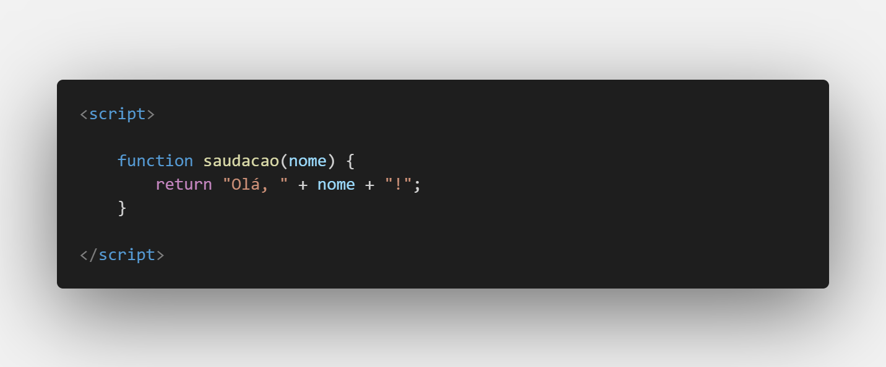
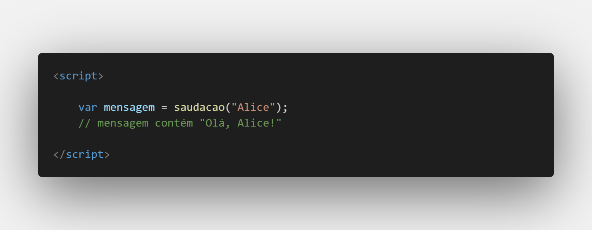
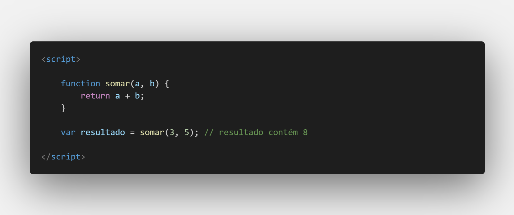
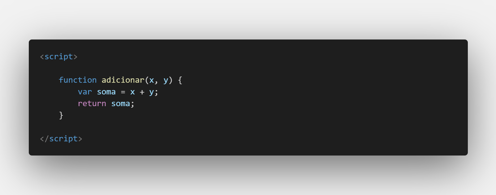
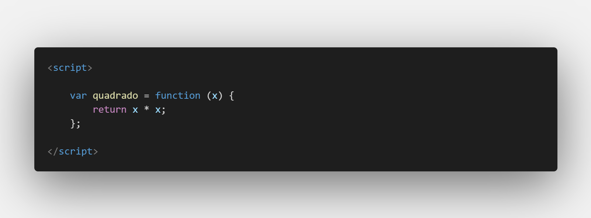
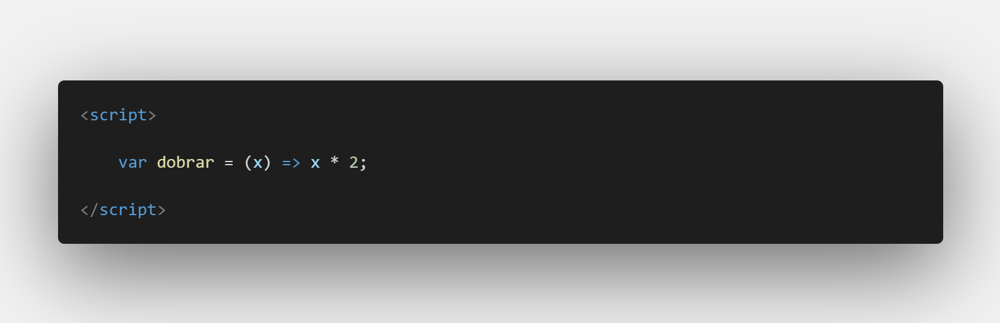
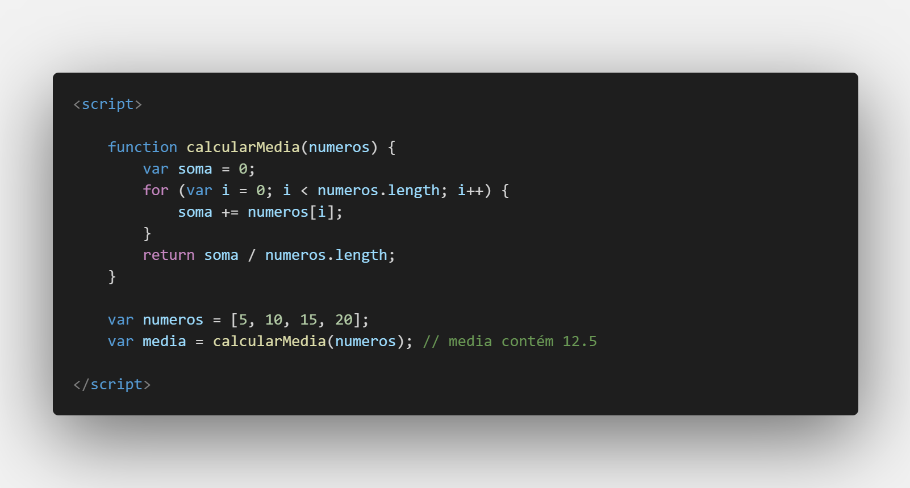
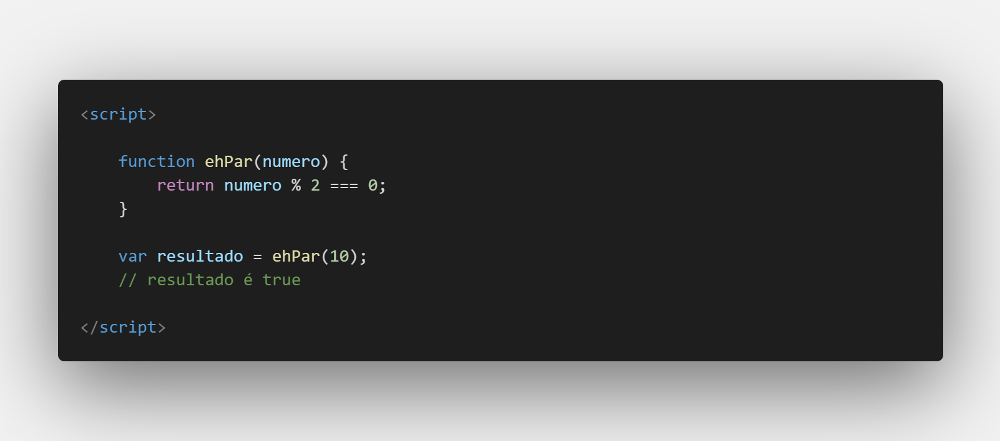
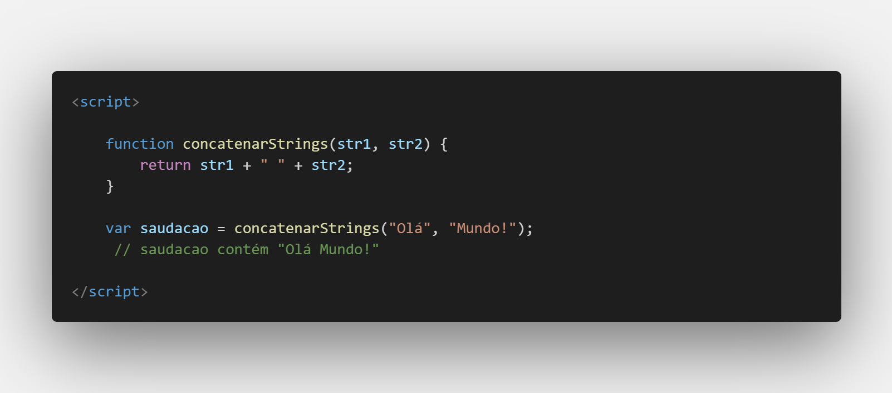
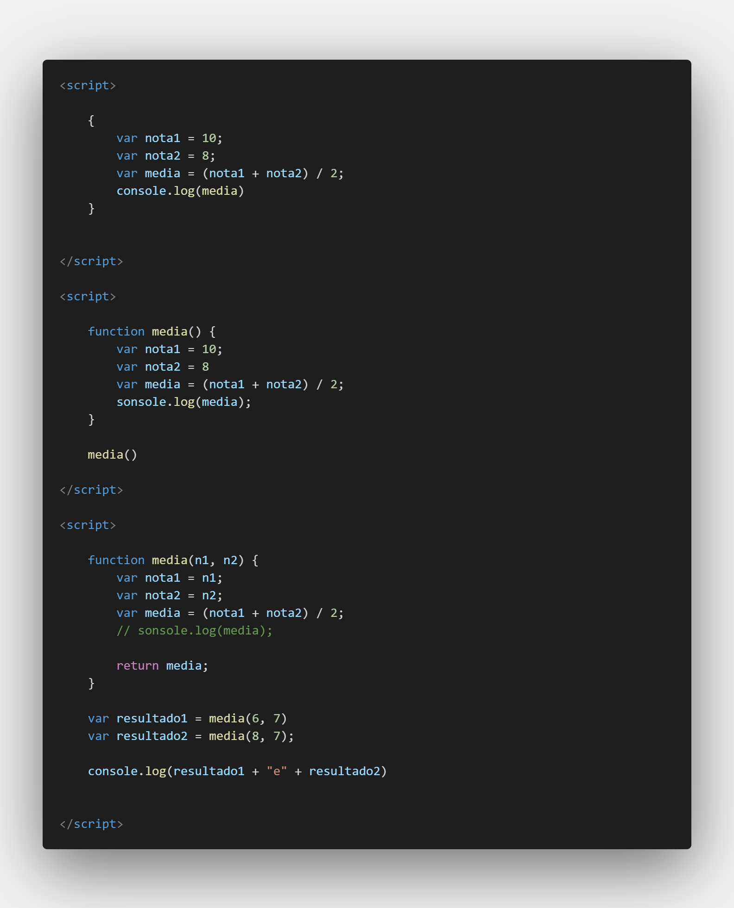

Aula 18,19/26 - Funções
As funções em JavaScript são blocos de código nomeados que executam uma tarefa específica quando chamados. Elas são fundamentais na programação, pois permitem que você reutilize o código e o organize em unidades lógicas. Funções podem aceitar argumentos (parâmetros) e retornar valores, ou podem simplesmente executar ações sem retornar nada.
Aqui estão os conceitos básicos sobre funções em JavaScript:
Declaração de Função:
Você pode declarar uma função usando a palavra-chave function. Uma função pode ou não receber parâmetros e pode ou não retornar um valor.

Chamada de Função:
Para usar uma função, você a chama pelo nome, seguido de parênteses.

Parâmetros e Argumentos:
Parâmetros são valores que uma função espera receber quando é chamada. Os argumentos são os valores reais passados para a função quando ela é chamada.

Retorno de Valores:
As funções podem retornar valores usando a palavra-chave return. Se uma função não tiver um return, ela retornará undefined por padrão.

Funções Anônimas:
Você pode criar funções sem nome, chamadas de funções anônimas, que são frequentemente usadas como argumentos para outras funções.

Arrow Functions (Funções de Seta):
As arrow functions são uma forma mais curta de escrever funções anônimas.

Aqui estão alguns exemplos práticos de funções em JavaScript:
Função que calcula a média de números:

Função que verifica se um número é par:

Função que concatena duas strings:

Funções são um dos pilares da programação JavaScript e são usadas para dividir um programa em partes menores e mais gerenciáveis, tornando o código mais organizado e reutilizável. Elas desempenham um papel essencial na criação de aplicativos e sites interativos.
Último exemplo, construindo uma idéia e polindo-a com funções.
